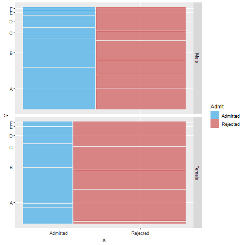

1. Introduction
The Shiny Application project:
- This project is a simple hello world project to learn how to make a Shiny app and a related presentation using RStudio.
- To learn more, see our github.
Arthur LAUREAU - Igor FIDALGO
The Shiny Application project:
The UCBAdmissions data set is frequently used for illustrating Simpson's paradox, see Bickel et al (1975). At issue is whether the data show evidence of sex bias in admission practices.
The UCBAdmissions data set is 3-dimensional array resulting from cross-tabulating 4526 observations on 3 variables. The variables and their levels are as follows:
| No | Name | Levels |
|---|---|---|
| 1 | Admit | Admitted, Rejected |
| 2 | Gender | Male, Female |
| 2 | Dept | A,B,C,D,E,F |
summary(UCBAdmissions)
## Number of cases in table: 4526
## Number of factors: 3
## Test for independence of all factors:
## Chisq = 2000.3, df = 16, p-value = 0
library(ggplot2)
library(ggmosaic)
ggplot(as.data.frame(UCBAdmissions)) +
geom_mosaic(aes(weight= Freq, x = product(Dept,Admit), fill=Admit)) +
facet_grid(Gender~.) +
scale_fill_manual(values=c("#56B4E9", "#D46A6A"))
